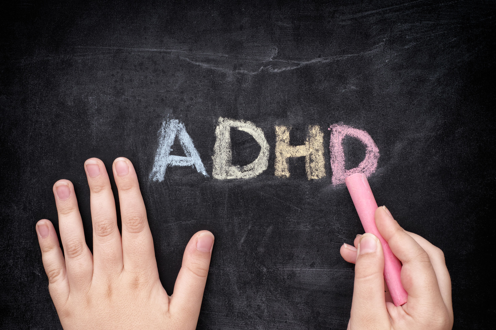
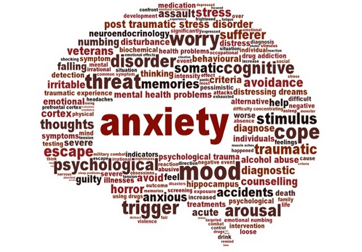
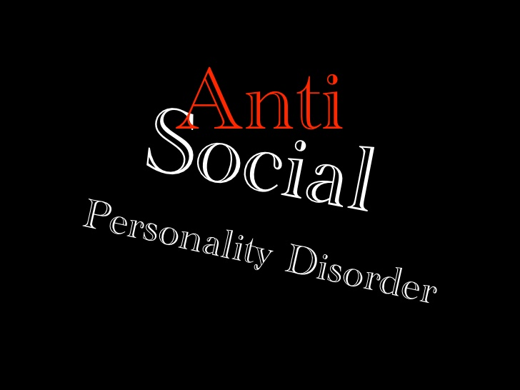

Early Signs of Mental Illnesses
- Feeling sad or down
- Confused thinking or reduced ability to concentrate
- Excessive fears or worries, or extreme feelings of guilt
- Extreme mood changes of highs and lows ...
- Withdrawal from friends and activities
- Significant tiredness, low energy or problems sleeping
- Detachment from reality (delusions), paranoia or hallucinations
- Inability to cope with daily problems or stress
- Trouble understanding and relating to situations and to people
- Problems with alcohol or drug use
- Major changes in eating habits
- Sex drive changes
- Excessive anger, hostility or violence
- Suicidal thinking
Different types of Mental Health Issues



For more click here:
Click here